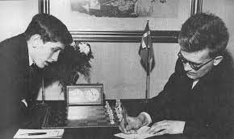

- Despite all weapons formed against him Bobby Fisher still managed to snag a few excellent wins.
- - I have compile a list of his top 10 greatest games and placed them on the bottom of thepage!!
- Back to home
- Early Life!
Here is a list of his top ten greatest games
- her, my second favorite player.
Winning the brilliancy prize.
R Byrne vs Fischer, 1963
(E60) King's Indian Defense, 21 moves, 0-1
- A night in Tunisia.
Fischer vs Myagmarsuren, 1967
(A07) King's Indian Attack, 31 moves, 1-0
- An attack on the king comes out of nowhere.
Fischer vs Spassky, 1972
(D59) Queen's Gambit Declined, Tartakower, 41 moves, 1-0
- Beating Tal for the first time in his life.
Fischer vs Tal, 1961
(B47) Sicilian, Taimanov (Bastrikov) Variation, 47 moves, 1-0
- One of the greatest endgames of all time.
Spassky vs Fischer, 1972
(B04) Alekhine's Defense, Modern, 74 moves, 0-1
- 11-0 in his matches.
A Saidy vs Fischer, 1964
(A33) English, Symmetrical, 56 moves, 0-1
- A queen for the king.
Letelier vs Fischer, 1960
(E70) King's Indian, 23 moves, 0-1
- His immortal swindle.
Fischer vs Reshevsky, 1958
(B32) Sicilian, 42 moves, 1-0
- Slaying the Sicilian Dragon.
Fischer vs Larsen, 1958
(B77) Sicilian, Dragon, Yugoslav Attack, 31 moves, 1-0
- Using his powerful bishop to smash Taimanov's measly knight.
Fischer vs Taimanov, 1971
(B47) Sicilian, Taimanov (Bastrikov) Variation, 71 moves, 1-0